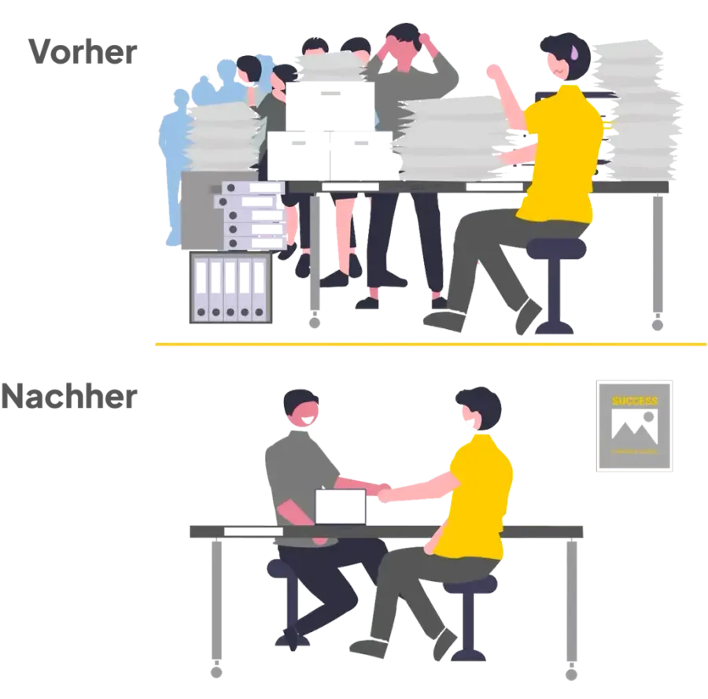
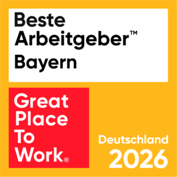
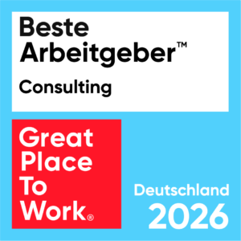
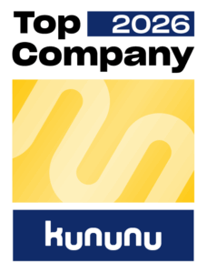
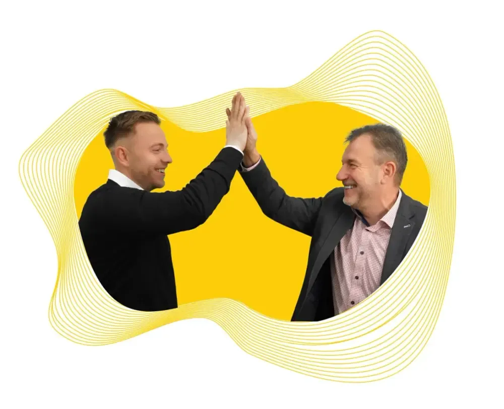

01
Eingaenge werden schneller, aber nicht klarer
Briefe, E-Mails, Portale und interne Uebergaben treffen gleichzeitig ein. Ohne gemeinsame Steuerung entstehen Liegezeiten, Rueckfragen und unklare Prioritaeten.
Pentadoc AG
Herstellerunabhaengige Unternehmensberatung fuer Input Management, Anliegenmanagement, Customer Communication Management, IT-Strategie, KI-Prototyping und Migration.
Oeffentliche Referenzen und Kundenlogos auf pentadoc.com
Warum jetzt
Versicherer und Krankenkassen muessen Eingangskanaele, Kundenerwartung, historisch gewachsene IT, Prozesslogik und Veraenderung im Betrieb gleichzeitig beherrschen. Pentadoc bringt diese Ebenen in ein entscheidbares Zielbild.
Briefe, E-Mails, Portale und interne Uebergaben treffen gleichzeitig ein. Ohne gemeinsame Steuerung entstehen Liegezeiten, Rueckfragen und unklare Prioritaeten.
Die Wirkung entsteht erst, wenn Anliegen, Prozesse, Rollen und Kundenerwartung sauber zusammengefuehrt werden.
Datenqualitaet, Betriebsrisiken, Abhaengigkeiten und Akzeptanz entscheiden, ob neue Loesungen im Alltag tragen.
Beratungsleistungen
Kundenanliegen vom Eingang bis zur Bearbeitung strukturiert erfassen, priorisieren und steuerbar machen.
Mehr Transparenz, kuerzere Liegezeiten und klare Verantwortung.Post, Dokumente, E-Mail und digitale Kanaele zu einem belastbaren Zielbild verbinden.
Eingaenge werden schneller nutzbar und weniger abhaengig von Medienbruechen.Kundendialoge, Dokumentenerstellung und Ausspielung konsistent ueber relevante Kanaele aufstellen.
Kommunikation wird verstaendlicher und besser integrierbar.Ablaeufe ueber Bereichsgrenzen hinweg analysieren und Automatisierung dort priorisieren, wo sie entlastet.
Programme zahlen auf den Gesamtprozess ein.Zielbilder, Sourcing-Fragen, Architekturentscheidungen und Transformationspfade klaeren.
Fachbereich und IT entscheiden mit demselben Bild.Konkrete KI-Anwendungsfaelle in dokumenten- und prozessnahen Ablaeufen kontrolliert testen.
Potenziale werden sichtbar, bevor grosse Programme starten.Systemabloesen, Datenbestaende und Kommunikationsloesungen so planen, dass Risiken frueh sichtbar werden.
Migrationen laufen mit klarer Roadmap.Strukturen, Rollen und Arbeitsweisen begleiten, damit digitale Veraenderung im Unternehmen ankommt.
Neue Loesungen werden nicht nur eingefuehrt, sondern genutzt.Signatur-Thema
Moderne Anliegen laufen ueber Portale, Dokumente, E-Mail, Telefon, Fachsysteme und interne Uebergaben. Entscheidend ist, diese Signale richtig zu verstehen und in belastbare Bearbeitung zu bringen.

5-D Modell
Realistisches Zielbild, belastbare Prioritaeten und klare Entscheidungsgrundlagen.
Unabhaengige Bewertung von Systemlandschaften, Architektur und Loesungsoptionen.
End-to-end Sicht auf Kundenanliegen, Eingangskanaele und operative Bearbeitung.
Akzeptanz, Befaehigung und Sicherheit fuer Teams, die Veraenderung tragen.
Rollen, Governance und Strukturen fuer stabile Umsetzung im Tagesgeschaeft.
Vertrauen
Pentadoc nennt oeffentlich ueber 25 Jahre am Markt, mehr als 850 Projekte und ueber 120 namhafte Kunden. Die Referenzen zeigen viel Naehe zu Versicherung, Gesundheit, Kommunikation und dokumentennahen Prozessen.
Die oeffentliche Referenz hebt Pentadoc als Partner fuer Input-Management-Erneuerung, Marktkenntnis und passgenaue Konzeption hervor.
SIGNAL IDUNAJens Clasen, BereichsleiterIm PoC-Kontext werden Fachkompetenz, Struktur und loesungsorientierte Beratung von Pentadoc betont.
AOK Baden-WuerttembergMelanie Dollmann-Guldenschuh, IT-LoesungsdesignerinDie Referenz beschreibt spuerbare Verbesserungen durch die mehrdimensionale Betrachtung der Pentadoc-Methode.
IKK SuedwestJuergen Becker, GeschaeftsbereichsleiterAuszeichnungen
Auf pentadoc.com oeffentlich gezeigte Arbeitgeber- und Unternehmensauszeichnungen.



Vorgehen
Das Ziel ist nicht mehr Folienlogik, sondern eine Umsetzungsbasis, mit der Fachbereich, IT und Fuehrung gemeinsam entscheiden koennen.
Ziele, Kanaele, Systeme, Prozessbrueche und laufende Initiativen werden schnell sortiert.
Anforderungen werden in ein priorisiertes Bild aus fachlicher, technischer und organisatorischer Sicht uebersetzt.
Migrationspfade, Auswahlfragen, Risiken, Rollen und Quick Wins werden konkret.
Teams werden durch Einfuehrung, Steuerung und Stabilisierung begleitet.

Warum Pentadoc
Die Beratung ist nicht an einzelne Produkte gebunden und kann sauber zwischen Fachnutzen, IT-Realitaet und Umsetzbarkeit abwaegen.
Klarer Schwerpunkt auf Versicherer, Krankenkassen und Organisationen mit komplexen Kundenprozessen.
Pentadoc verbindet Zielbild, Prozessdesign, IT-Strategie, Organisation und konkrete Umstellung.
Kontaktweg
Name, E-Mail, Thema und ein kurzer Kontext reichen fuer den Start.
Die Anfrage enthaelt genug Kontext, damit das Gespraech direkt produktiv wird.
Das Formular sendet die Anfrage an das zustaendige Projektpostfach.
Kontakt
Teilen Sie kurz mit, welche Kanaele, Systeme oder Prozessfragen betroffen sind. Danach kann das Thema fachlich eingeordnet und der passende naechste Schritt geklaert werden.
FAQ
Fuer Versicherer, Krankenkassen und Organisationen mit hohem Volumen an Kundenanliegen, Dokumenten, Eingangskanaelen und komplexen Fachprozessen.
Ja. Themen wie KI-Prototyping, Loesungsmigration, Input Management oder IT-Strategie koennen einzeln betrachtet werden.
Hilfreich sind Ausgangslage, betroffene Kanaele oder Systeme, gewuenschtes Ziel, grober Zeitrahmen und die wichtigste Frage.
Meist reichen Fachbereich, IT oder Prozessmanagement. Bei fruehen Orientierungen genuegt eine kleine Runde.
Der oeffentliche Auftritt positioniert Pentadoc als herstellerunabhaengige Beratung.
Pentadoc AG sitzt laut Impressum in der Goethestrasse 1, 97072 Wuerzburg, Deutschland.
Naechster Schritt
Bereit fuer eine klare Transformationsentscheidung?
Kurze Anfrage senden oder direkt anrufen.